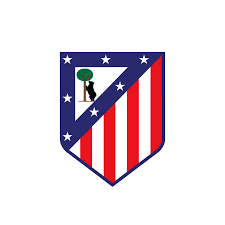

Estudios
Estudiante de 1º DAM en el IES Simarro.
Mi objetivo es trabajar como programador o llegar a ser profesor.
Gamer · 1º DAM · Valencia
Programador en formación, apasionado de los shooters, la tecnología y el fútbol.
Estudiante de 1º DAM en el IES Simarro.
Mi objetivo es trabajar como programador o llegar a ser profesor.
Me interesa la tecnología, el desarrollo de software y el aprendizaje continuo.
Disfruto jugando al fútbol y a videojuegos, especialmente shooters en primera persona.
Etapa base de mi formación académica.
Primer contacto con la tecnología y la lógica.
Sistemas Microinformáticos y Redes.
Desarrollo de Aplicaciones Multiplataforma · IES Simarro.
Mi objetivo: trabajar programando o enseñando lo que aprendo.


Esta web es mi primer proyecto serio y lo he hecho a mano con lo que voy aprendiendo en 1º DAM. No he usado frameworks ni plantillas: solo HTML, CSS y JavaScript. Aquí cuento con honestidad qué he conseguido, cómo, y qué me queda todavía por aprender.
HTML5, CSS3 y JavaScript vanilla. Sin librerías externas.
Se sirve como web estática y la gestiono con Git y GitHub.
Tema claro/oscuro con variables CSS y localStorage.
Responsive con Grid y Flexbox, y respeto por prefers-reduced-motion.
Control del DOM, IntersectionObserver para animaciones y scroll-spy, y un poco de canvas para las partículas.